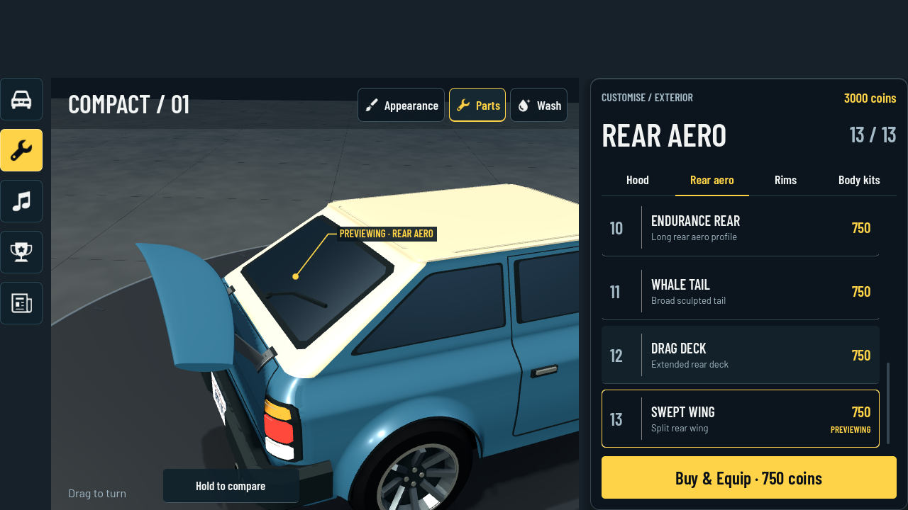
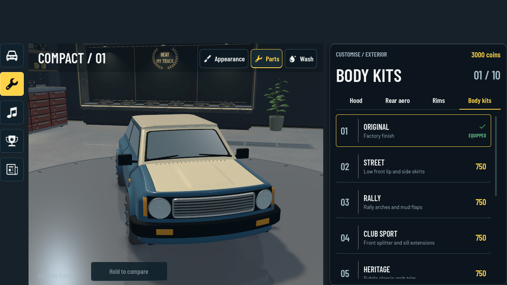
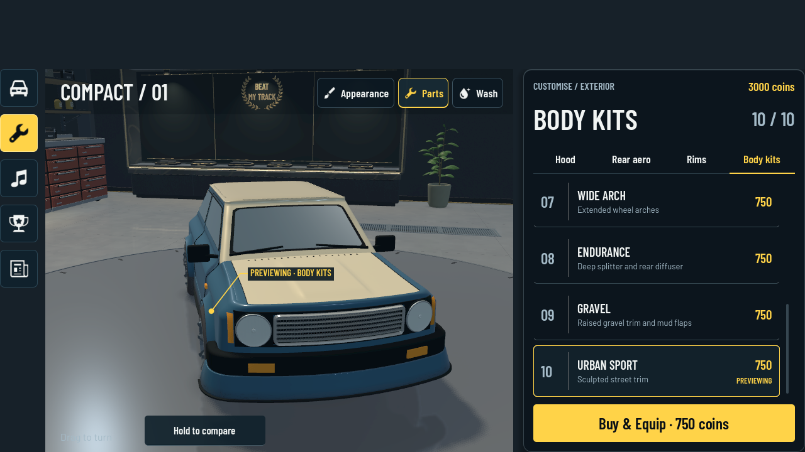
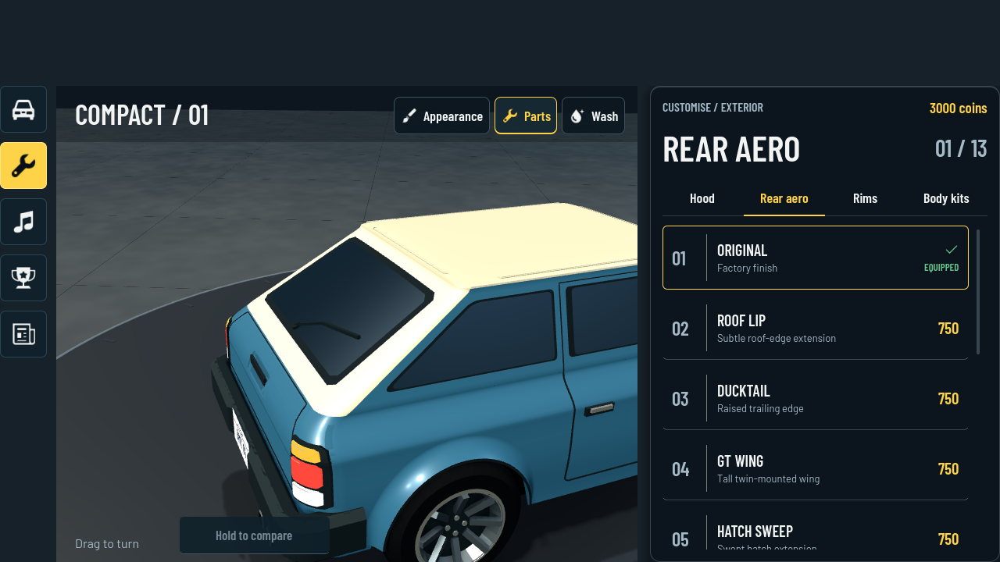
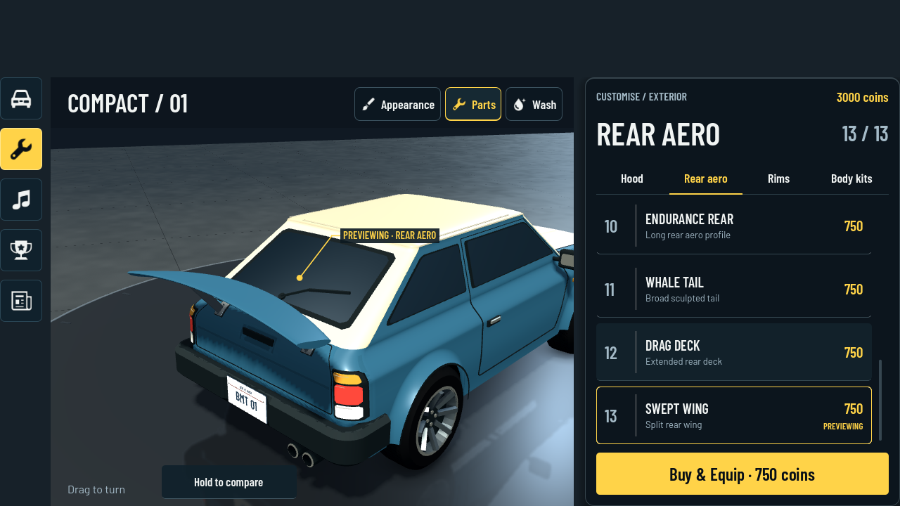

Stable rear-aero and body-kit selection
Native Garage regression, 26 October 2026. The player rotates and zooms first, then browses all non-stock rear-aero/body options with mouse and touch. The chosen preview and camera remain in place. Real viewport resizing preserves the angle and user orbit values.
Rear aero — fixed
 Player's view before browsing.
Player's view before browsing.

After browsing: selected aero changes; camera stays.
Clean equipped exterior — fixed

Equipped exterior is clean; interior voxels need no washing.

Preview remains selected without a false wash rejection.
Original camera movement

Before selecting aero.

Original behavior: focus restarts and replaces the player's view.
The expanded original regression records four selection resets and up to 2.655 world units of camera-origin drift. The fixed desktop runs record zero resets and zero reported origin drift across 63 sampled option transitions each. Purchase/save/account guards and genuine newer-dirt locking remain. Commands, exact outcomes and transition data.
Desktop Compatibility and Vulkan Mobile only. No device attachment check/test, APK, real purchase, deployment or owner-process restart. Reload and owner/device acceptance remain.